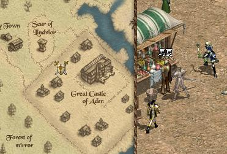
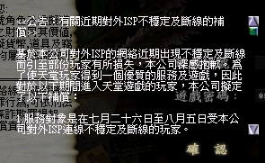

| 2003年8月6日 香港官方沒有提及的更新內容
暫時發現的如下：
1. 精靈餅乾的時限由五分鐘增至八分鐘。
2. 亞丁城內的NPC馬夏會收購精靈水晶（一級250 二級1000 三級2000 四級3000 五級4000）及精靈玉，他的位置如下：

3. 在創立新角色的畫面加入新職業的簡介，暫時仍不能創立。
香港官方公告會為7月26日至8月5日的大斷線作出補償


前天官方只是公告會補償8月2日及8月3日的大斷線，而今天突然轉，會為最近7月26日至8月5日的大斷線作出補償，但要玩家等到8月20日才會正式得到賠償，如果可以加快處理的話就更好了。

〔黑色是反應時間(ms)，紅色是封包流失(%)〕
另外最近在繁忙時間中伺服器的整體封包流失率急遽上升至3-5%，大家都會經常感受到十秒一小Lag，廿秒一大Lag的威力。對於天堂這種即時戰鬥及死亡懲罰高的遊戲來說，封包流失率必須保持少於0.1%，否則便很難玩了。在此建議大家暫時在繁忙時段(21:30-01:30)不要到高危的地方（如遺忘之島、傲慢之塔）打怪。希望官方能夠儘快更換其他穩定性較好的ISP。 |